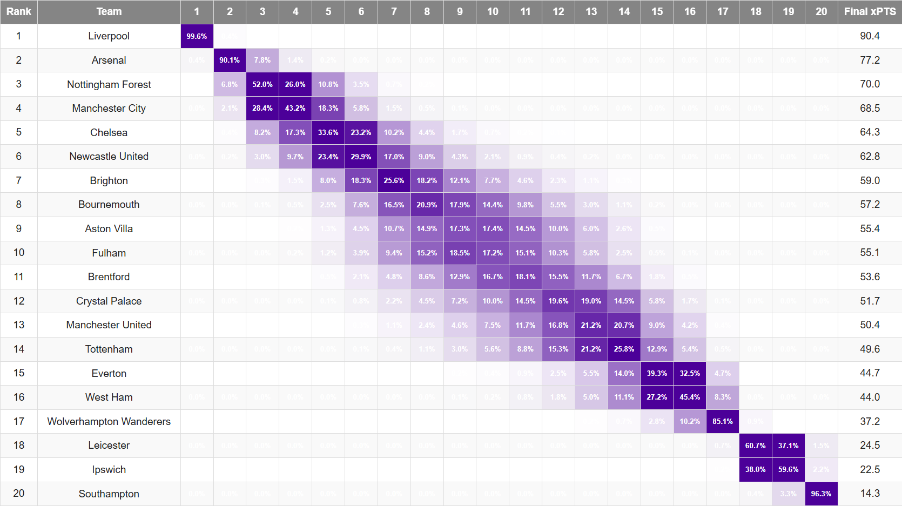

How We Predict Football Matches
Our match predictions are based on statistical modeling that simulates thousands of possible outcomes.
We use historical data, team performance metrics, and expected goals (xG) to predict match outcomes.
A Poisson distribution, a widely used method in sports betting, is used to predict the likelihood of each team scoring a given number of goals.
What Data Do We Use?
Our model takes into account various factors:
Historical Match Data: Provides insight into a team’s long-term performance trends.
Expected Goals (xG): Measures the quality of goal-scoring opportunities.
Recent Team Form: Includes short-term trends in attack and defense.
Home & Away Performance: Accounts for home-field advantage effects.
Injuries & Suspensions: Missing key players can impact team strength.
How Do We Use This Data?
Each team is assigned an Attack Rating and a Defense Rating, based on their performance relative to the rest of the league.
We estimate how many goals a team is likely to score in a match using Poisson regression.
This method assumes goals are scored randomly but with a predictable average rate, allowing us to calculate:
The probability of a team scoring 0, 1, 2, 3... goals.
Followed by the the probability of each possible match scoreline.
Then we can calculate overall win, draw, and loss probabilities.
The results are visualized as
heatmaps, showing the most probable scorelines using a color gradient for a nice visual.

Monte Carlo Simulation: Predicting the Final League Table
Once match probabilities are determined, we extend our predictions to forecast the final league table positions.
This is done using a Monte Carlo Simulation, which simulates the remainder of the season thousands of times.
How It Works:
For each remaining fixture, we simulate a match outcome based on the Poisson model's probabilities.
Teams are awarded points based on these simulated results.
We repeat this process 10,000 times, recording each team's final league position.
The percentage of times a team finishes in a particular position forms our final probability table.
Final xPTS: Expected Season Points
To estimate the final points tally for each team, we calculate Final xPTS:
Final xPTS = Current Points + Expected Simulated Points (Remaining Fixtures)
This metric gives a data-driven prediction of how many points a team will end the season with.

Why Use Our Model?
Better insights – Go beyond basic win/loss predictions and analyze deeper match dynamics.
Data-driven decisions – Useful for analysts, FPL players, and bettors looking for an edge.
Data visuals – Our heatmaps and probability tables make it easy to interpret predictions.
 }})